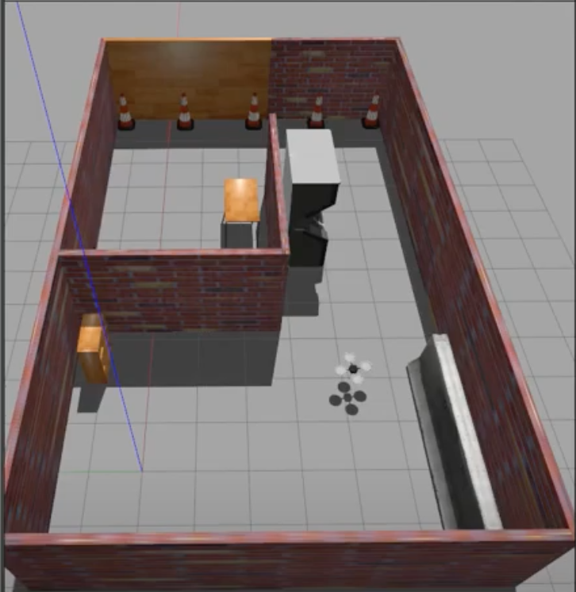

Hector quadrotor

The drone model used is here is hector quadrotor. The setup has a utml30x lidar and camera attached to the quadrotor.The world (testing environment) is built using gazebo building editor.
The first setup uses gmapping to build a map by scanning through the entire room in 2D space.